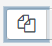
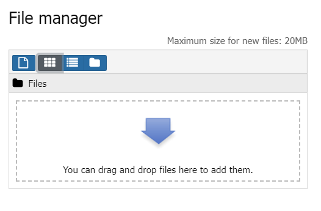

Tutorial Upload File B.Inggris
- 1. klik button ini  untuk upload File
lalu upload filenya disini

- 2. attach filenya ke textarea, kalo tidak di attach filenya bakal hilang.
gunakan button ini untuk attach filenya
1. pilih Browse Repository
2. klik menu Embeded files
3. pilih file yang sudah kamu upload sebelumnya
4. klik Select This File
5. jika sudah bisa di savechange